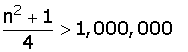

Limit of Sequence Problems
1Prove that the sequence has a limit of 2. Also, calculate the terms whose distance from 2 is less than 0.1.
2Prove that the sequence has a limit of 4 and calculate how many terms of the succession are not within (4 − 0.001, 4 + 0.001).
3Prove that the sequence has a limit of 1 and calculate how many terms of the succession are not within (1 − 0.001, 1 + 0.001).
4Prove that . Also, calculate the terms whose distance from the limit is less than 0.01.
5Prove that the sequence has a limit of +∞ and determine how many terms in the sequence are less than a million?
6Prove that the sequence an= −n2 has a limit of −∞. Also, what term of the sequence produces values of less than −10,000?
1
Prove that the sequence has a limit of 2. Also, calculate the terms whose distance from 2 is less than 0.1.


Froma41 the distance to 2 is less than 0.1.
2
Prove that the sequence has a limit of 4 and calculate how many terms of the succession are not within (4 − 0.001, 4 + 0.001).
The first thousand terms of the sequence are out.
3
Prove that the sequence has a limit of 1 and calculate how many terms of the succession are not within (1 − 0.001, 1 + 0.001).
The first 54 terms are out.
4
Prove that . Also, calculate the terms whose distance from the limit is less than 0.01.


From a219 the distance to the limit is less than 0.01.
5
Prove that the sequence has a limit of +∞ and determine how many terms in the sequence are less than a million?

The 1,999 first terms of the sequence.
6
Prove that the sequence an= −n2 has a limit of −∞. Also, what term of the sequence produces values of less than −10,000?
−1, −4, −9, −16, −25, −36, −49, ...

If N = 10,000, its square root is 100, therefore, a101 will be less than −10,000.
a101= −1012 = −10,201